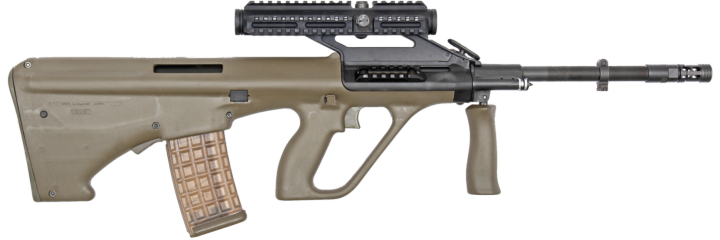

Overview
The Steyr AUG (Armee Universal Gewehr) is an Austrian bullpup assault rifle designed in the 1960s by Steyr-Daimler-Puch, and now manufactured by Steyr Arms GmbH & Co KG. It is a gas operated semi and fully automatic assault rifle with rotary bolt, quick changeable barrel and integrated optical sight. The AUG is famous for its modular concept which permits field stripping into the main groups within a few seconds. The AUG is the standard weapon of many armed forces and special units all over the world since 1977.
- Bullpup design – short overall length
- Rotary bolt, with seven locking lugs
- Quick change of different barrels
- A number of Picatinny rails
- Extremely high hit probability
- Utmost training simplicity
- Highest operational versatility
- Various FX Systems available
Caliber
- 5.56×45 NATO
- 9 rounds | 30 rounds | 42 rounds
- Detachable, synthetic (transparent) staggered box type
Dimensions
- With 382mm (16") barrel: 690mm (27") | 3.2kg (7.0lbs)
- With 417mm (16.4") barrel: 725mm (29") | 3.3kg (7.3lbs)
- With 508mm (20") barrel: 790mm (31") | 3.6kg (7.9lbs)
- Barrel cold hammer forged, chrome-lined bore including chamber
Trigger
- "Pull through" trigger system. Fires semi automatic when pulled halfway to a clearly felt point, fires fully automatic when pulled fully back
- Synthetic (except for springs, steel bearing pins and catch holding open); optional 3 rounds burst
Safety
- 3 position safety, lateral push-through type locks trigger
Stock
- Synthetic, olive or black. Optional stock group for NATO magazines